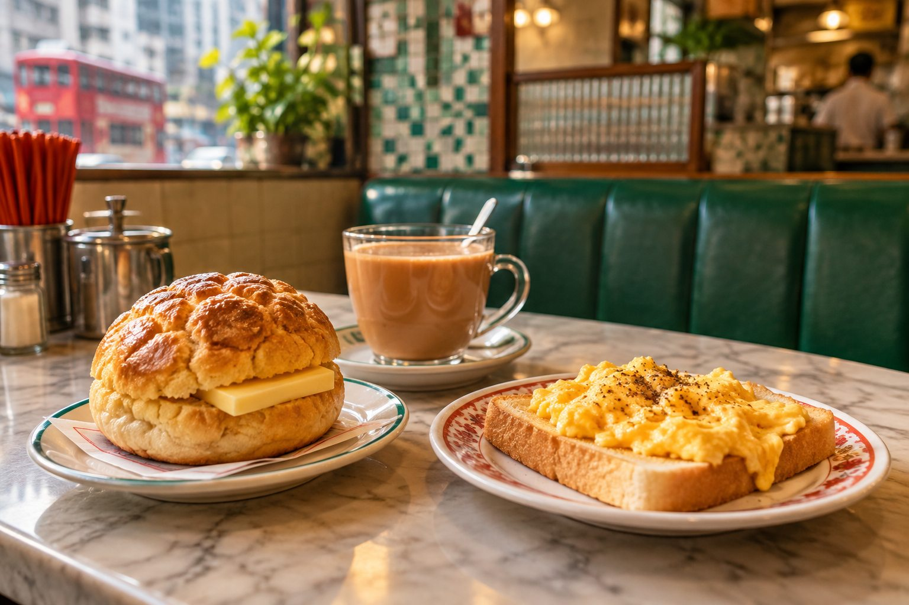

今天早上，小美和朋友去香港的茶餐廳吃早餐。店裡很熱鬧，很多人都在喝奶茶、吃菠蘿包。
小美看了菜單，想點一份炒蛋多士和一杯熱奶茶。她先問店員有沒有早餐套餐。店員說有，而且套餐還可以加一個蛋撻。
最後，小美點了一份 A 餐，再加一個蛋撻。她覺得第一次在香港茶餐廳點餐很有趣。
在茶餐廳、酒樓和街頭小吃店，用華語完成真正的點餐任務。每個單元都有普通話拼音、香港廣東話與粵拼。

先看普通話，再比較香港人常說的廣東話。
| 食物／飲品 | 普通話拼音 | 廣東話／粵拼 | 小提醒 |
|---|---|---|---|
| 奶茶 | nǎichá | 奶茶 naai5 caa4 | 港式奶茶通常茶味比較濃。 |
| 菠蘿包 | bōluó bāo | 菠蘿包 bo1 lo4 baau1 | 不一定有菠蘿；名稱來自表面紋路。 |
| 蛋撻 | dàntà | 蛋撻 daan6 taat1 | 常見港式甜點。 |
| 雲吞麵 | yúntūn miàn | 雲吞麵 wan4 tan1 min6 | 常見蝦肉雲吞＋細麵。 |
| 叉燒包 | chāshāo bāo | 叉燒包 caa1 siu1 baau1 | 飲茶經典點心。 |
| 燒賣 | shāomài | 燒賣 siu1 maai6 | 酒樓版與街頭魚肉燒賣不太一樣。 |
| 凍檸茶 | dòng níng chá | 凍檸茶 dung3 ning4 caa4 | 「凍」在香港常表示冰的。 |
| 鴛鴦 | yuānyāng | 鴛鴦 jyun1 joeng1 | 咖啡＋奶茶。 |
目標：早餐、套餐、加點。
今天早上，小美和朋友去香港的茶餐廳吃早餐。店裡很熱鬧，很多人都在喝奶茶、吃菠蘿包。
小美看了菜單，想點一份炒蛋多士和一杯熱奶茶。她先問店員有沒有早餐套餐。店員說有，而且套餐還可以加一個蛋撻。
最後，小美點了一份 A 餐，再加一個蛋撻。她覺得第一次在香港茶餐廳點餐很有趣。
你想吃菠蘿包、喝凍檸茶，而且店員問你要不要加蛋撻。
目標：點心名稱、量詞「籠」、加點。
星期天早上，阿明跟家人去酒樓飲茶。桌上有蝦餃、燒賣、叉燒包，大家一邊喝茶，一邊聊天。
阿明最喜歡蝦餃，媽媽喜歡叉燒包，外公想再點一籠燒賣。服務員推著點心車過來，阿明問：「這個是什麼？」服務員回答：「這是蝦餃，很受歡迎。」
最後，他們又加了一壺普洱茶。阿明終於明白香港人說的「一盅兩件」是什麼感覺。
蝦肉餡、半透明外皮。
豬肉／蝦肉點心常見。
甜鹹叉燒餡。
點蒸籠點心常用的量詞。
再點更多食物。
酒樓常見茶類之一。
你們已經吃了一籠蝦餃，但大家還想再吃。
目標：問價錢、少辣、堂食／外賣。
下午，小美去逛街。她看到一家街頭小吃店，很多人排隊買魚蛋、雞蛋仔和腸粉。
小美想吃魚蛋，可是她不太能吃辣，所以她說：「我要一份魚蛋，少辣。」接著她看到雞蛋仔，又問：「這個多少錢？」
店員問她要堂食還是外賣。小美等一下還要去坐電車，所以選擇外賣。
你只能吃一點點辣，還想問價錢。選最合適的回答。
在店裡吃。
普通話可以說「內用」。
帶走吃。
普通話常說「外帶」。
結帳。
普通話可說「買單／結帳」。
冰塊少一點。
不要冰。
甜度低一點。
| 功能 | 普通話 | 廣東話 |
|---|---|---|
| 請／麻煩你 | 請給我…… | 唔該…… m4 goi1... |
| 我要 | 我要一杯奶茶。 | 我要一杯奶茶。 ngo5 jiu3 jat1 bui1 naai5 caa4. |
| 再加 | 再加一個蛋撻。 | 加多個蛋撻。 gaa1 do1 go3 daan6 taat1. |
| 多少錢 | 這個多少錢？ | 呢個幾多錢？ ni1 go3 gei2 do1 cin2? |
至少選 2 樣，再選口味與用餐方式。
炒蛋多士＋熱奶茶
學生 A：客人
學生 B：店員
至少說 3 句：我要……／還要……嗎？／謝謝。
一籠燒賣＋一壺普洱茶
必須使用「一籠」「一壺」「再加」。
魚蛋（少辣）＋雲吞麵
必須問一次價錢，並決定堂食／外賣。
先用普通話完成，再用廣東話版本完成一次。不能看稿時，可以只看關鍵詞。
三題全部答對，就完成今天的任務。
✓ 認識香港常見食物與飲料。
✓ 用「我要……」「再加……」「這個多少錢？」點餐。
✓ 知道「一籠」「一杯」「一壺」等常用量詞。
✓ 分辨部分普通話與香港廣東話說法。
✓ 在茶餐廳、酒樓、街頭小吃三個情境完成任務。